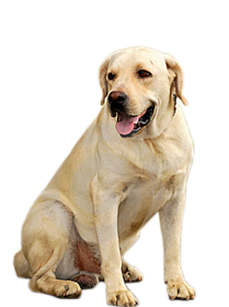

Six Dog Breeds
Pit bull
The Pit Bull has a stocky, muscular build and a short, smooth coat varying in color. The body of the Pit Bull is long, with a short, whip-like tail that ends in a point. Small- to medium-sized ears are set high on its broad, flat head. The most defining facial characteristic of the Pit Bull is its wide, powerful jaw. Pit Bulls are strong and athletic. With their impressive stamina and staunch work ethic, they enjoy a variety of sports. Especially when adolescent, these dogs have a tendency to get easily excited, so adequate exercise, training, and mental stimulation are a must for these dogs. While most experts agree that Pit Bulls are a short-coated dog characterized by a wide skull, powerful jaws and a muscular, stocky body, there is great variation in appearance. Typically 35 to 65 pounds, some weigh as little as 25 pounds, others tip the scales at 80 pounds or more.
Labrador
The sweet-faced, lovable Labrador Retriever is America's most popular dog breed. Labs are friendly, outgoing, and high-spirited companions who have more than enough affection to go around. The dense, hard coat comes in yellow, black, and chocolate. The head is wide, and the thick, tapering 'otter tail.' Labs are famously friendly. They are companionable housemates who bond with the whole family, and they socialize well with neighbor dogs and humans alike. The Lab is an enthusiastic athlete that requires lots of exercise, like swimming and marathon games of fetch, to keep physically and mentally fit.
German Shepard
German shepherd, a breed of working dog developed in Germany from traditional herding and farm dogs. Had a long body and a coat that is of coarse, medium-long outer hair and shorter, dense inner hair and ranges from white or pale gray to black and is often gray and black or black and tan. Noted for intelligence, alertness, and loyalty, the German shepherd is used as a guide for the blind and as a watchdog and also serves in police and military work.
Husky
The Siberian Husky is a medium-sized working sled dog breed. The breed belongs to the Spitz genetic family. It is recognizable by its thickly furred double coat, triangular ears, and distinctive markings, and is smaller than the similar-looking Alaskan Malamute. It is an active, energetic, resilient breed, whose ancestors lived in the extremely cold and harsh environment of the Siberian Arctic. Today, the Siberian Husky is typically kept as a house pet, though they are still frequently used as sled dogs by competitive and recreational mushers.
Corgi

Among the most agreeable of all small house dogs, the Pembroke Welsh Corgi is a strong, athletic, and lively little herder who is affectionate and companionable without being needy. A well-built male Pembroke presents a big dog in a small package. Short but powerful legs, muscular thighs, and a deep chest equip him for a hard day's work. Built long and low, Pembrokes are surprisingly quick and agile. They can be red, sable, fawn, and black and tan, with or without white markings. The Pembroke is a bright, sensitive dog who enjoys play with his human family and responds well to training. As herders bred to move cattle, they are fearless and independent. They are vigilant watchdogs, with acute senses and a 'big dog' bark.
Shiba Inu

An ancient Japanese breed, the Shiba Inu is a little but well-muscled dog once employed as a hunter. Today, the spirited, good-natured Shiba Inu is the most popular companion dog in Japan. The adaptable Shiba is at home in town or country. Brought to America from Japan as recently as sixty years ago, Shiba Inus are growing in popularity in the West and are already the most popular breed in their homeland. Their white markings combined with their coloring coloring consisting of red, red sesame, or black and tan. Their alert expression and smooth stride makes them almost fox like. They're sturdy, muscular dogs with a bold, confident personality to match. The Shiba is an ancient breed, having been around since 300 b.c. By the end of World War II Shibas were nearly extinct, but they survived Japan's wartime deprivations and are today the country's number-one companion animal. Their popularity has been growing in the United States for the past 50 years.